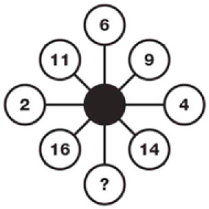

PUZZLE-7
Soru işareti yerine hangi sayı gelmelidir?

Cevap:
Soru işareti yerine gelmesi gereken sayı 1’dir.
Aynı doğrultuda bulunan üç sayının toplamı 19’dur. Örneğin; 2 + 11 + 6 = 19. Dolayısıyla 19 - (14 + 4) = 1 olur.